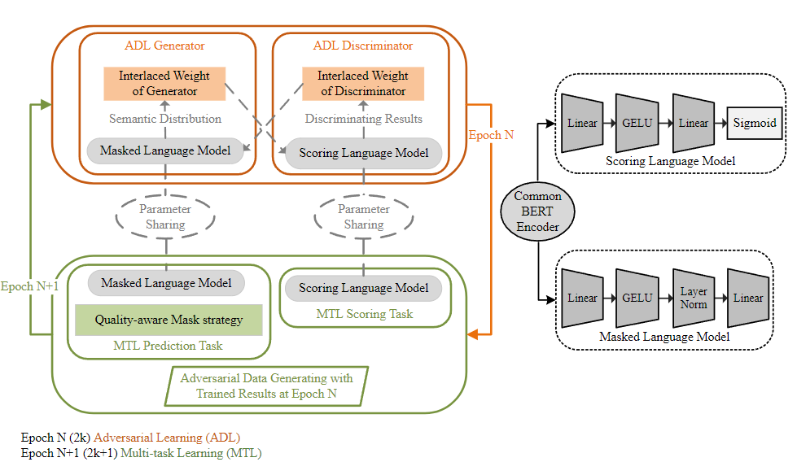

Published on ICANN2022. Code
ABSTRACT
Text correction, especially the semantic correction of more widely used scenes, is strongly required to improve, for the fluency and writing efficiency of the text. An adversarial multi-task learning method is proposed to enhance the modeling and detection ability of character polysemy in Chinese sentence context. Wherein, two models, the masked language model and scoring language model, are introduced as a pair of not only coupled but also adversarial learning tasks. Moreover, the Monte Carlo tree search strategy and a policy network are introduced to accomplish the efficient Chinese text correction task with semantic detection. The experiments are executed on three datasets and five comparable methods, and the experimental results show that our method can obtain good performance in Chinese text correction task for better semantic rationality.
METHODOLOGY
- Adversarial Multi-Task Learning 
- Chinese Text Correction with Semantic Error Detection
We consider that adversarial multi-task learning is a model training strategy for two adversarial and cooperative model tasks. For Chinese text correction, two core task models, including the masked language model and the scoring language model, are considered in this study. Wherein, the masked language model is to predict reasonable characters in the masked position of a sentence, and the scoring language model is to examine the semantic quality of every character in its sentence context. A BERT encoder is introduced as the common encoder for scoring language model and masked language model. The adversarial multi-task learning is composed of the adversarial learning phase and multi-task learning phase. The multi-task learning aims to find the optimal semantic representation using the common encoder for different down-stream tasks. While, the adversarial learning is to enhance the robustness of classifier in distinguishing similar tokens in a sentence.
In order to realize the correction of a sentence with possible errors, the Monte Carlo tree search (MCTS) strategy is introduced to find and correct possible error characters. Wherein, all possible positions with error characters can be found by means of the trained scoring language model, and the most reasonable (correct) sentence can be recommended based on the combined use of the trained masked language and scoring language models.
Case Study
an example is presented including an original correct sentence, a typical wrong sentence generated in our experiment, and five corrected results by four comparable correction methods and our method. For the above different corrected results, the corrected result of our method might be the most reasonable in sentence semantics. Concretely, for the character string with wave underlines in sentences, our method accurately understands the emotion of the given wrong sentence and finds similar words (争得/strive for). Similarly, for the character string with straight under-lines, only our method can give a correction solution that the (中/in) is added. Of course, the last result of our method still has not completely repaired the wrong sentence to the ideal result (original correct sentence), which also reflects the complexity and hardness of the Chinese text correction task.